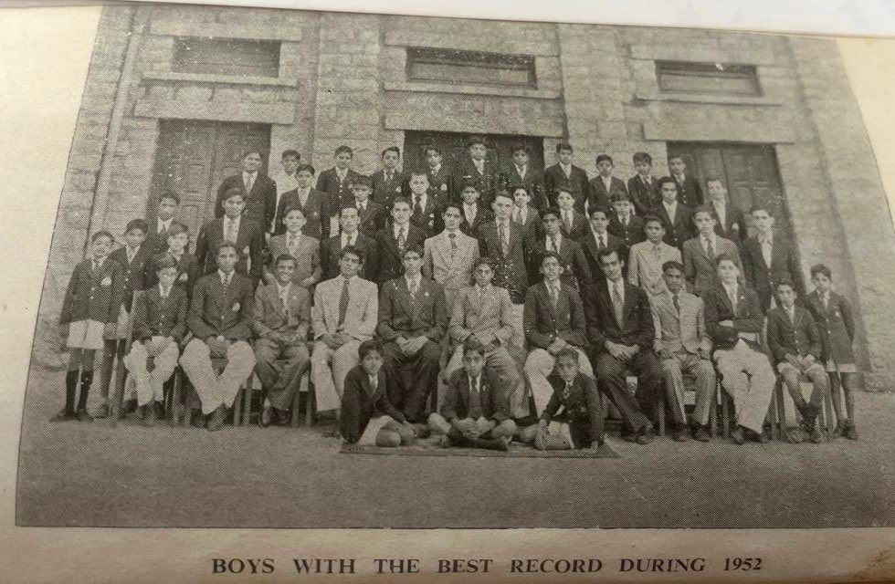
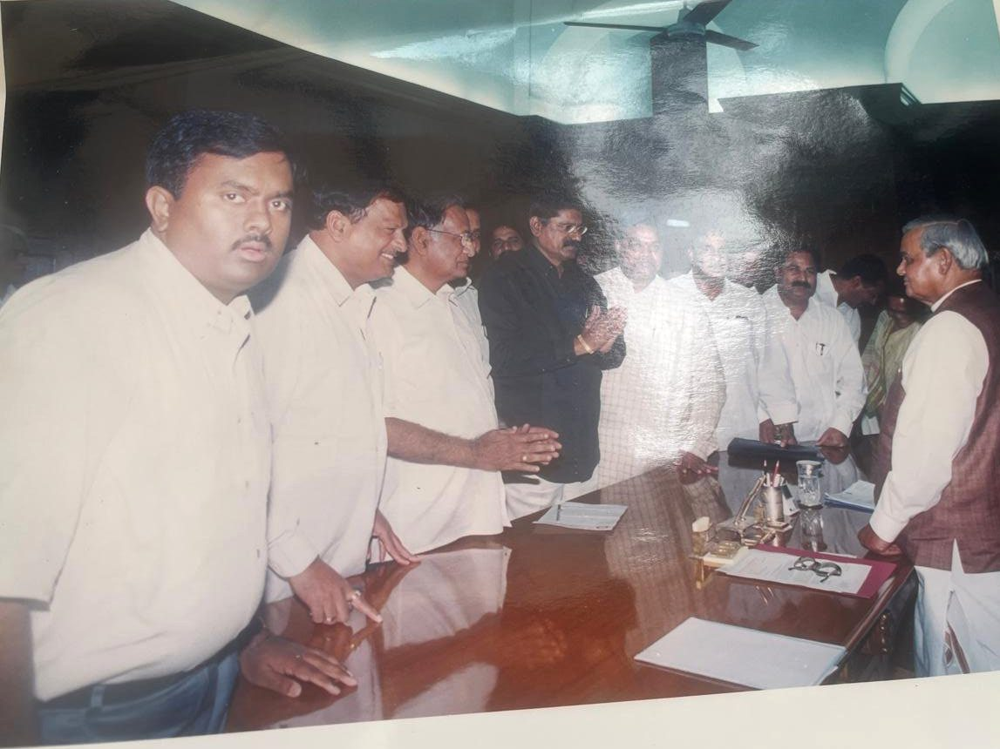

Twenty-two stories from a long life, chosen from his book My Life Journey.
Written by him in 2023, with additions in 2026, and from a recording made at his bedside in 2016. The words are his.
Vijay Kumar Rao, Thatayya to his grandchildren, was born in the Kalleda house in 1935, the year the house was finished. He went to school in Poona and Bangalore, came home at eighteen to farm at Redlawada, and went on to find black granite, to lead the granite industry of the state, and to bring electricity, a school and a health centre to his village. He married Pramila in 1955 and, after her death, Swaroopa in 1978. He is the father of Uday, Sunil, Utham and Prasannita. At 88 he wrote his life down. These are some of the stories.
The family before him: a widow who walked to Kalleda, a wedding on foot at Tirupati, and the house that was finished the year he was born.
About two hundred years ago · Methrasapelly to Kalleda
The widow who walked to Kalleda
The story goes that my ancestor Gumula Buchama, a young widow with her infant son, walked from the neighbouring Methrasapelly village to Kalleda, ten kilometres away, after the family partition. She took her share of a few cows and some paddy to settle down in Kalleda. She was an enterprising lady and used to give paddy on loan to the farmers, and they would repay the paddy with interest after the harvest.
She would stock the paddy in huge baskets of ten feet in diameter and ten feet in height. They were woven with long sticks and shaped with domes on top, and pasted liberally with cow dung to keep insects away. This practice was in vogue even after two centuries, till around 1960. These baskets were called Gummi. So the word Gummala was added to Buchama. She earned a good name in this business and slowly accumulated her wealth.
Family note. This is where the name Gummala comes from. Everyone on the tree descends from Buchama and the infant son she carried to Kalleda.
About 1914 · Tirupati
A wedding on foot
My mother Chokama married my father Narasimha Rao in Tirupati Temple in around 1914. Then they had to go by walking up the hill, since there were no buses to the temple. My mother's parents were not willing to give their daughter to my father, since they felt that the Kalleda family was not up to their standard. Then, out of all my father's sisters-in-law, my mother is supposed to have got the largest dowry in gold.
My mother used to get up early in the morning, before 5 am, and see that all the elders got their coffee. She was in charge of the kitchen, where she spent most of the day cooking for the whole household and for the relatives who used to visit our house in Kalleda. She was also very religious.
1930 to 1935 · Kalleda
The house finished the year I was born
My father was the main person in the family for the construction of the Kalleda house. Before he started building he seems to have visited many well-known places like the Mysore palace. He believed in the quality of the work. If any work was not up to his standard, he just got it demolished and rebuilt again. This mansion in Kalleda was built in five years and completed in 1935, the year I was born. It is a very big building spread over an acre.
My father used to be very playful with children, so they used to call him Manchi Kaka, meaning good uncle. He used to do perfect yoga. He used to make Ayurvedic medicines with roots of plants from the forest.
The 1930s and 40s · Kalleda
Kalleda was run like a company
We were a very large household owning 12,000 acres of dry land and 1,200 acres of wetland. We were supposed to be one of the biggest landholders in the then Nizam state. Kalleda management was run like a company. Pedanaina, my father's elder brother Venkateshwar Rao, was the general manager; my father was in charge of agriculture; Venkatrama Narsaiah was in charge of accounts and of the abkari, the toddy business. This business used to have daily collections of money, mainly in coins. After receiving and counting, the cash used to be put in cloth bags and kept in the store room. I remember seeing this happening daily.
To supervise agriculture, every day my father used to leave the house before 5 am, after having the coffee my mother made, and come back by 9 or 10. My grandmother used to bend like an L and walk. I do not remember her taking any rest. She was in charge of milk from the cows, which gave about 30 litres or more per day. The buttermilk she used to sell to the villagers for one paisa a half litre, I think. This income was to be hers.
The 1900s · Warangal and Calcutta
The two boys who almost sailed to London
My grandfather Veeraraghava Rao gave importance to educating his children. So he rented a house in Warangal and got my Pedanaina and one of his Muslim friends to study together. These two later planned to go by ship from Calcutta to London. My grandfather somehow came to know of their plans, and before they could board the ship they were brought back. From then onwards Pedanaina was made to help him look after agriculture.
Pedanaina was very clever and could solve any problem he faced. Even the officials regarded him. It is learnt that the collector at that time used to get up in respect when he visited the office. His official dress was a sherwani and pyjama and a lal topi on his head, about six to seven inches in height, with a tail hanging from the centre.
The Second World War · Karimnagar district
Buses that ran on charcoal
The sixth brother, Vidyasagar Rao, was a very, very bright and business-minded person. He ventured to start a bus service in Karimnagar district even before the RTC had started. This was during the Second World War, when petrol was in short supply. So the buses were running on gas generated from charcoal. The family had one or two of the only cars in the whole district.
Though he grew up in a traditional household, he was sort of a rebel. In the early 1940s, one day when he came to Kalleda from Hyderabad, he called Harijans from the village and fed them in the Kalleda house. He was very broad-minded and used to look for the betterment of the whole family. Unfortunately he died early, of TB. If he had lived like the other brothers, the Kalleda family would have been much different in many ways than it is now.
A boy far from home
Sent away to school at thirteen, speaking neither English nor Hindi, he found the food, a teacher who changed his life, and a name that was not his.
About 1944 · Kalleda
The teacher and the stone
When I was eight or nine years old, my cousins and I were put under a Telugu teacher, an Ayagaru, in Kalleda. He used to beat us for any small mistake. Our parents thought that the teacher who beats the most is the best. While teaching he would fall asleep. He used to have a long juttu on his bald head. So one day when Ayagaru was in deep slumber, my cousin brother Arvind tied a rope to his juttu and the other end to a stone. When Ayagaru got up and saw what had happened to him, he was so wild that he beat all of us.
1949 · Poona
Desserts every twenty days
My family decided to put me in the Shivaji Military Preparatory School at Poona, where my cousin Murlidhar Rao already was. In British times the school was meant for the sons of British military officers. I joined this prestigious school in the third class in the year 1949, just after Independence. I enjoyed the food very much, especially the best desserts you can think of. The variety of dessert given today would be given again only after twenty days. We had khaki uniforms, dress for dinner and sports, and also night dress. It was like a new world to me. There were all types of sports, including horse riding and swimming.
But I was a lost person, never able to interact with any other boy, since I was not able to speak proper English or Hindi, the spoken languages.
1950 to 1954 · Baldwin School, Bangalore
Miss West
My class teacher was an Anglo-Indian. Her name was Miss West. She was like a God-sent person for me. After admission Miss West checked my standard. Her advice was that I be moved to class two from class four. I felt that I was too big in that class. But I could not do anything. Later on she became my tutor till I left the school. I don't remember Miss West ever getting angry or scolding me.
She was married to an English Army officer in Burma. After the war he left her and went back to the UK. Miss West came to India and joined Baldwin School. She had an Indian father and an English mother. Whatever knowledge I gained, I credit to her.
At 9 am we had an assembly in the hall for the whole school. One piece of good advice that I have remembered all my life is: "A thief can rob you of all your wealth, but he cannot rob you of your knowledge." When I look back, the best days of my life were the days in Bangalore, except for the loss of my dear mother.

Baldwin School, Bangalore: "Boys with the best record during 1952." Behind the boys is the school building, built in 1880. Thatayya is one of the boys in this photograph.
1954 · Bangalore
The letter I still have
When I was admitted to Baldwin School my name was recorded as Srinivas Rao, on the direction of my uncle Rajeshwar Rao. None of my family members liked it, because I was always called Vijay. On leaving the school I got a letter from my Principal, Mr Anderson, that I am also called Vijay Kumar Rao. Without any question he obliged me and gave me the letter. I still have that letter with me.
1954 · from the 2016 recording
One more year and I would have gone to America
After the Cambridge exam I had the books for the American agricultural colleges in hand, and I meant to study agriculture there. One more year and I would have gone. In those days anyone could just apply and go. Then the family partition left my father alone at Redlawada, and I was called home at seventeen or eighteen. I no longer remember which college it was.
"A thief can rob you of all your wealth, but he cannot rob you of your knowledge."
Dora of Redlawada
Home at eighteen to a thatched house and a village that called him by a title he did not understand. Then Pramila, three sons, and a village lit for the first time.
December 1953 · Redlawada
Chinna Dora
I came to Redlawada after five years away, during which English had been my only spoken language. I was totally lost. I could not speak Telugu properly, nor could I write a word. I was surprised when I was called Chinna Dora in the village, and not by my name. When the villagers called me Dora, I thought it meant "his highness". I wrote to my Bangalore school friends to tell them about my new title.
My father engaged a tutor to teach me Telugu and accounting in Telugu. One rupee equalled sixteen annas. Somehow I learned. My father used to see that I got up by 5 am, and that the agricultural servants also got up and took the bullocks for grazing. He used to insist that I submit the expenditures to the last paisa. To go to Warangal I used to go by kachuram, a cart driven by two bulls, to Nekkonda station, ten kilometres, and it used to take more than an hour.
My father's cash share to me was 116 rupees, plus enough paddy to feed the farm workers for a year. Very often, after I bought items for farming and was returning to Redlawada, I used to make sure that I had 40 paise for a train ticket from Warangal to Nekkonda.
13 March 1955 · Khammam, then Redlawada
Pramila
Father was lonely in Redlawada and thought that I should get married. So, with the help of his best friend Venkat Rao of Avakunta village, he decided to fix Pramila, of Painampalli village in Khammam district. The marriage was on 13 March 1955 in Khammam.
After marriage Pramila and I lived in Redlawada in the thatched house till Utham was born in 1960. The floor was hard mud. Every morning after sweeping, red earth mixed in water used to be pasted on the floor. One had to wait to enter the room till the paste had dried. Uday was born on 6 July 1956 in Khammam, Sunil in Hyderabad on 25 August 1958, and Utham on 18 March 1960. Then we shifted to the house I built in Redlawada.
We had a good family life. She was a person who never complained about her personal problems. In April 1978 Pramila fell ill, and Saroja Akkaya took us to Hyderabad for a proper check-up. There it was found that she had cancer. The doctors gave very little hope. Just before her death she called Nirmala and Swaroopa to her bed and, holding their hands, told them to take care of me. Soon after, she left us all for good.
Family note. The high school in Redlawada is named after her: Erraballi Pramila Devi Memorial ZPSS.
The 1960s · Redlawada
Citrus from Poona
After I got my share of the property I concentrated on digging wells and planting mango and citrus trees, which I got from Poona. I went personally to get the plants. I think I was the only person at that time to plant citrus trees in this area. My chilli and groundnut crops yielded the highest in the area. But prices were very low. In spite of all my success, my expenditure in agriculture was always more than my income. My father used to get The Hindu by post. After seeing an advertisement in the paper, he sent me to Bhopal for about six months for tractor training.
1957 onwards · Redlawada
Lighting Redlawada
I got electricity for Redlawada village around the year 1957. Redlawada was the first village to get electricity in the then Narsampet taluq. At that time some villagers objected to getting electricity to the village, fearing they might die of electric shocks. They gave petitions to departments not to sanction electricity for the village. But they did not succeed.
I also got an eye camp held in the village and distributed glasses to the needy. I donated land for the government primary school, the veterinary hospital, the panchayat office and the primary health centre. In 1998 I gave about three acres of land for housing plots. My family constructed a function hall in 2003 and donated it to the village. We had some land in the centre of Nekkonda by the railway station; the RTC wanted it for a bus stand, so this land was given, and the present bus stand is in the same place. I arranged with Saraswathi Vidyapeeth to set up four or five night schools. I got bore wells dug, a landline telephone to Redlawada, and the road from Parvathagiri to Redlawada. I donated tailoring machines to the women in the village.
Granite
He learned the trade over dinners with a quarry supervisor who would not tell him the truth, then spent days in the hills looking for black stone.
The 1970s · Redlawada and the hills around
Learning the trade from Muthiyalu
I was tempted to go into the granite business when one person from Madras got a quarry lease in Redlawada village. His supervisor, Muthiyalu, was in charge of the quarry. At this time quarry operation was manual, with chisels and hammers, and black powder for splitting the rock. I asked him where he was sending the blocks and what the end use was. He never used to tell me the truth. I being from the same village, he thought I might be his competitor. So I became friendly with him and entertained him with good food. Slowly he took to me and gave me the real information: black granite was quarried mainly for monuments, used mostly in Japan and the Western countries.
So I started to go for days together looking for new quarries. I even went to Elkul in Karnataka, and to Ongole for Galaxy granite. I had a good friend, Varda Reddy, whose lands were in Ravoor village near Kalleda. For days together he used to stay with me. He entertained me with his wonderful jokes. With good luck I found Peddapuram and two quarries in Ingurthi as black granite quarries, one of which was given to Utham, and he started his granite business; and a colour quarry in Karimnagar, and Athmakoor in Warangal.
The 1990s · Delhi
To Delhi, to see the Prime Minister
The central government imposed the CST tax on granite. All the granite industries in India opposed it, mainly because they would be harassed by the officials. So each state got an association formed, and I was elected President of the AP State Granite Association. I along with other members took an appointment with Shri Vajpayee, the then Prime Minister, and Shri Yashwant Sinha, the then Finance Minister. We expressed our problems regarding the imposition of CST on granite. Our representation was heard carefully, and very soon we got confirmation that CST would not be imposed on the granite industry.

The AP State Granite Association delegation with Prime Minister Atal Bihari Vajpayee in Delhi.
The 1990s · the Supreme Court
One sitting
While I was doing the Ingurthi quarry, I realised there was a big deposit of black granite in the forest area. The government will only grant a lease in a forest area if one compensates with an equal number of acres planted with forest trees. I applied for the lease, but to my bad luck there was a slight error in my application, and another applicant got the lease. On this issue I appealed to the High Court, without success. I appealed in the Supreme Court by engaging one advocate, Mr K. L. Narasimha Reddy, who later became a High Court judge. In the Supreme Court Mr Chidambaram represented my case. In one sitting I won the case. Later on, in 1995, I set up a granite factory for cutting the blocks, at Shamirpet.
1996 · Redlawada
The night the machines burned
In the year 1996 the Naxalite movement started again, and it was not safe for me to be in the village. Some self-interested persons instigated the Naxalites to get rid of me and destroy my business. So one day, when I came to Redlawada to visit the quarry, the Naxalites planned to attack me from the bushes on the way to the quarry. To their bad luck, I was not sitting in their line of fire. The same night they burnt most of the machinery. The loss was more than one crore. The news of this event was relayed on many TV channels and newspapers.
I had some insurance on the machinery. To claim it I had to take an inspector from Hyderabad to assess the damage. The police first discouraged me from visiting, but I told them that unless I got the inspection done I would not get the compensation. They were kind enough to oblige, by fixing the date and arranging police protection for the full length of the 4 km road to the quarry. I must thank the police for this.
From 1978 · Redlawada, Warangal, Hyderabad
Swaroopa
After Pramila, my father and the family decided I should marry again. Saroja Akkaya found Swaroopa, a relation of Saraswathi, to be a suitable girl. The marriage was done in December 1978 at Yadagiri temple, with the minimum of relatives. God blessed us with a girl, Prasannita.
When one factory owner applied for the other half of the Redlawada quarry, it would have led to great problems. Swaroopa intervened and convinced him to withdraw his application, on a compromise, by giving him a compressor. Then, to apply for the balance area, I had to take a loan from the bank by pledging Swaroopa's gold. Later, when a partner offered to buy the quarry, Swaroopa opposed it, and we went on to operate it at quite a good profit. Our life would have been different if Swaroopa had not taken these daring steps.
We bought a plot in Mahendra Hills. The site was beautiful, as we could see the city well. I built a house there, engaging an architect from Madras through one of my granite buyers. He gave a good design, which became a landmark in that area.
What he built
A school that began as his son's idea, and five houses.
The 1990s · Kalleda
Uday's idea: a school
The RDF school was the concept of my eldest son Uday, who lived in the US. He wanted the family to do service for the villagers. The best way was to educate them. On one of his visits to India he got so involved in it that he resigned his good job in the US. He started planning to set up a school in Kalleda. This project was later taken up by my cousin Rammohan, who runs four such RDF schools in the villages. My sons, my nephew Arjun and other family members donated generously to make a success of Uday's brainchild.
Family note. The schools are still running.
2023 · Gandipet
Five houses
So in my life I built my first house in Redlawada, two other houses in Warangal, one flat in Banjara Hills, and the fifth and last house in Gandipet, close to Prasannita's house. The story of my life still goes on. Hope it will end on a happy note!
"The story of my life still goes on. Hope it will end on a happy note!"
Do you have a memory of Thatayya?
A story he told you, a visit to Redlawada, a photo from a wedding, the way he says a particular thing. Send it, and it will be added to this page under your name. Short is fine. A voice note is fine.
Or ask him something. Questions from the family go into the next recording with him.
What did the Kalleda house sound like in the morning, with so many people in it?
What did Miss West look like? Did you ever hear from her again?
What was the first thing you bought with granite money?
Which of your five houses do you like best, and why?